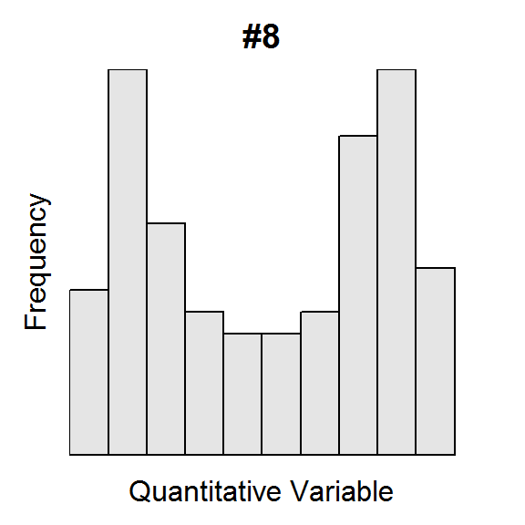
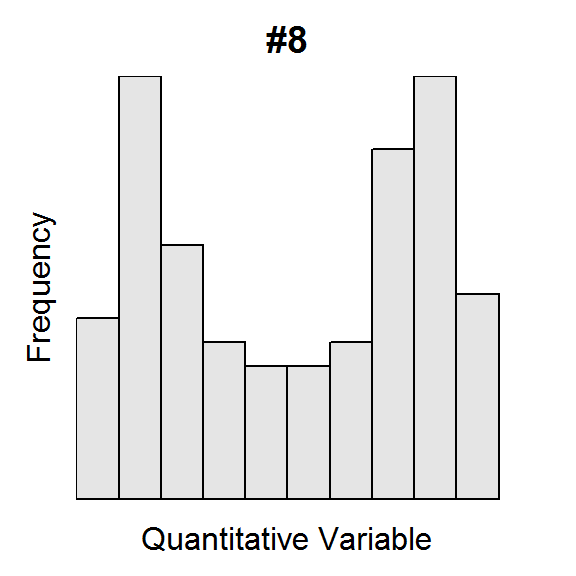

Histograms I
The U.S. Census asked individuals 16 years old and older “How long in minutes is your one-way commute to work each day?”. The mean for individuals from each state was computed and is plotted in the histogram below.

Use this histogram to answer these questions.
- What is an individual in this example?
- What type of variable is recorded?
- How many individuals are represented in this histogram?
- How many individuals had a mean commute time between 16 and 18 minutes?
- How many states had a mean commute time between 18 and 24 minutes?
- What was the range of mean commute times for the bin with exactly five states?
- What is the shape of this distribution.
- Are there any outliers represented in this distribution?


 
